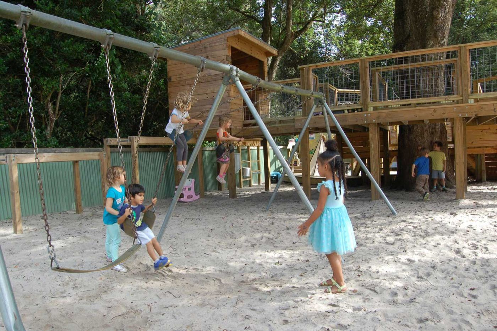

Swimming
Daily when weather allows, including instruction for the youngest groups. Water activities are monitored by a certified lifeguard and camp staff.
Summer camp 2026
June 8–July 17, 2026. For children entering grades K–8. Spots are limited, and there is a sibling discount.
The camp’s main objective is for each child to enjoy time away from home through a wide variety of activities, and to build a healthy self-concept in a caring, supportive atmosphere. Staff are asked to respond to each child and to the group.
The grounds include a large athletic field, swimming pool, tennis court, playground, woods, and a variety of plants and animals. The air-conditioned building has activity rooms, an art deck, a kitchen, a piano, and a multi-purpose room for large groups and rainy days.
Most campers come from schools in greater Gainesville. Others visit from around the country and world, often when a parent is working at the University of Florida. The school has hosted campers and counselors from New York to California, and from Korea, Spain, France, Israel, Puerto Rico, Nicaragua, Colombia, Ecuador, and Brazil. There is no English-fluency requirement. The main spoken language is English.

There is no camp on Friday, July 3. Use one application for siblings. Each additional sibling receives a $100 discount per session. After you submit the application, Jordan Glen sends an invoice. Registration is confirmed once payment is received. Questions: info@jordanglen.org.
| Session | Dates | Rate | JG student |
|---|---|---|---|
| Sessions 1 & 2 | June 8–July 17 (6 weeks) | $2,050 | $1,850 |
| Session 1 | June 8–June 26 (3 weeks) | $1,250 | $1,150 |
| Session 2 | June 29–July 17 (3 weeks) | $1,250 | $1,150 |
| Weekly | One week | $475 | $425 |
Camp runs 9:00 a.m.–2:30 p.m. Campers may arrive at 8:30 a.m. There is no official before-camp or after-camp childcare. Campers who need to stay are supervised until 3:00 p.m., and parents often arrange private childcare or rides with counselors.
Campers bring lunch Monday through Thursday. Friday is a pizza, cookout, or other special lunch the camp provides, always with a vegetarian option.
Offerings change by year and by session. The school publishes these as the kinds of things camp includes.
Daily when weather allows, including instruction for the youngest groups. Water activities are monitored by a certified lifeguard and camp staff.
Beading, tie-dye, jewelry, lanyards, macramé, puppetry, decoupage, wearable art, hair wraps, collage, doll making, quilting, friendship bracelets, sewing, knitting, paper craft, mosaic, weaving, and basketry.
Soccer, tennis, basketball, baseball, ping pong, field hockey, gatorball, track and field, bocce, lacrosse, capture the flag, kickball, crab soccer, volleyball, flag football, table tennis, and disc golf.
A variety of roles in performances, including an end-of-camp talent show.
Time in the 20 acres of outdoor space.
Archery, cooking, dance, music, treasure hunts, shuffleboard, chess, Olympics, skyball, games, a carnival, and surprises.
Campers are typically 5–14 years old. The youngest are children entering kindergarten or currently in PreK. The oldest are children entering 9th grade. The overview page also says camp is for children entering grades K–8.
To schedule a tour, call (352) 495-2728 or send a message through the school’s information form. Applications and camp registration use the forms already on jordanglen.org.